Data Analyser
User guide for half-hourly energy data analysis
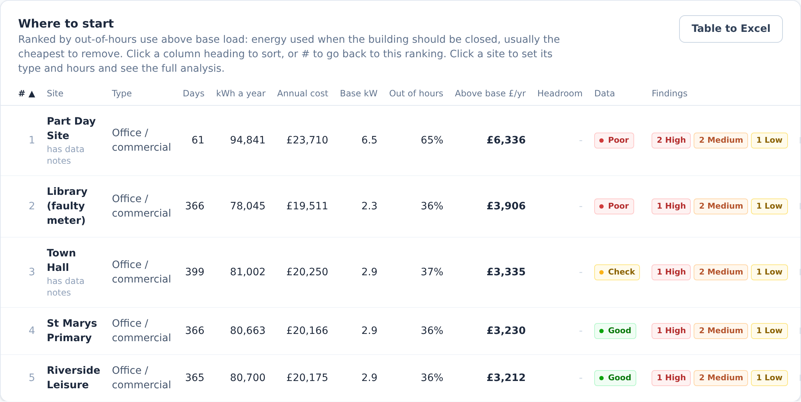
User guide for half-hourly energy data analysis

Read section 1. Then, before you send anything to a client, check two things on every site: the building type and opening hours are right, and the data quality verdict isn't Poor. Most wrong answers come from one of those two.
Ameresco-Data-Analyser.html. It opens in Chrome or Edge. Nothing installs and nothing goes online.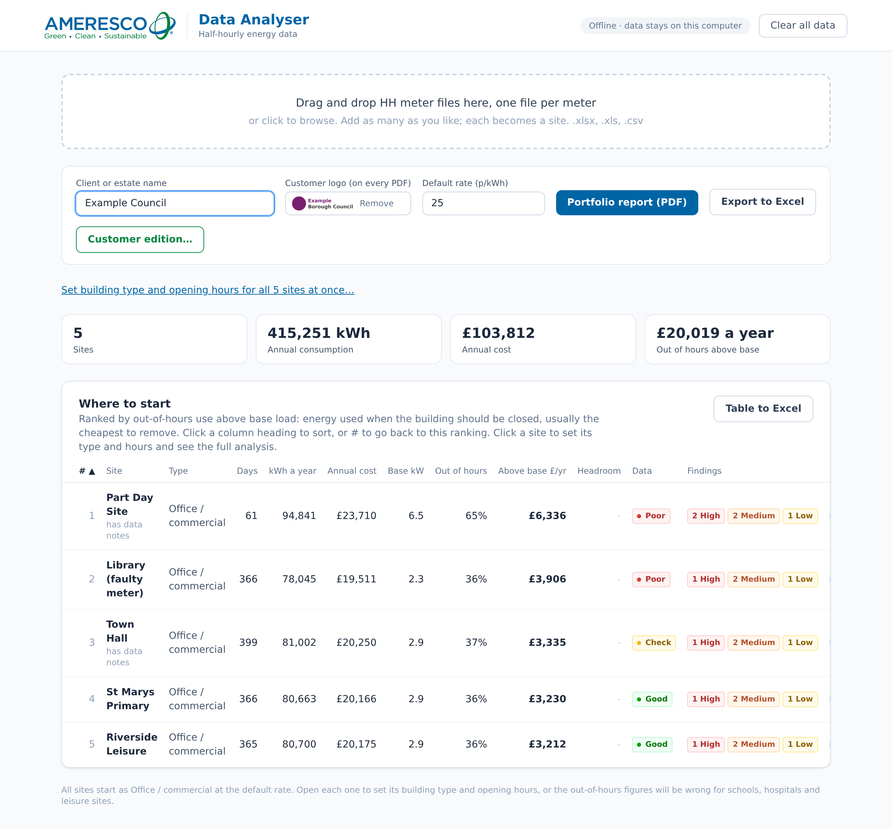
The Data Analyser turns half-hourly (HH) electricity data into a ranked view of where a site or estate wastes energy, priced at a unit rate, plus a check on how much spare supply capacity there is for electrification. It handles a single site or a portfolio of hundreds, and produces Ameresco-branded PDFs and spreadsheets.
Nowhere. Closing the browser tab clears it. Clear all data (top right) takes the app back to empty without closing it. A file you export (PDF, Excel, customer edition) is saved to your Downloads folder like any other download, so look after it in line with the client's data agreement.
| File | What it is |
|---|---|
Ameresco-Data-Analyser.html | The app. One self-contained file, about 1.5 MB. Copy it anywhere; it doesn't need anything else beside it. |
| Five sample HH data sets | Practice files. Load all five at once to see a portfolio, then open each site. They cover different building types and data problems, so between them you'll see most findings and data quality checks. |
| This user guide (PDF) | What the app does, how it works things out, and how to use it. |
Use Chrome or Edge, current versions. Firefox and Safari generally work but aren't tested. If double-clicking opens the file in something else, right-click it and choose Open with, then Chrome or Edge.
The app doesn't update itself. When a new version comes out, replace your copy. The version you have is whatever file you opened; a customer edition always uses the version of the app that made it.
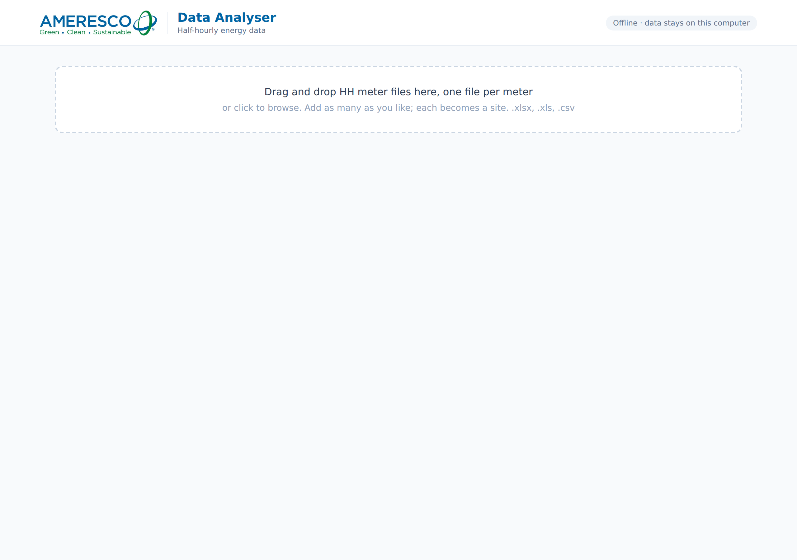
.xlsx, .xlsm, .xls, .csv and .txt. CSVs can be comma, semicolon or tab separated; the app works out which.| Layout | Looks like | Notes |
|---|---|---|
| Days down the side (most common) | One row per day: a date, then 48 half-hourly readings (00:00 to 23:30). | Meter ID or MPAN columns before the date are ignored. |
| Days across the top | One column per day, 48 rows of readings down the side. | Detected automatically and turned round. |
| 50-period exports | A date, then 50 columns (the two extra are the clock-change periods). | The first 48 are used, with a note. |
A file with several meters stacked one after another, which is common in supplier portal exports, shows up as many repeated dates. The app refuses it with a message, rather than splicing different meters into one profile. Split it into one file per MPAN and load those.
Anything the app had to fix or assume is listed in an amber box at the top of the site page, and the site shows has data notes in the table. Read them. They're also the first thing to check if a number looks wrong.
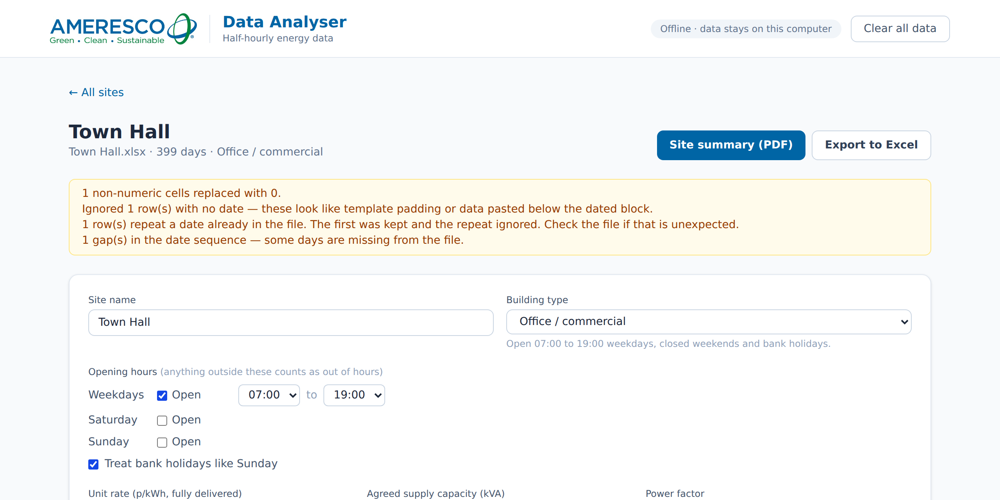
Opening hours drive every out-of-hours figure, so this is the most important setting. Choosing a building type fills in typical hours, which you then adjust to match the site.
| Type | Default hours |
|---|---|
| Office / commercial | 07:00 to 19:00 weekdays. Closed weekends and bank holidays. |
| School / education | 07:00 to 17:30 weekdays. School holidays count as out of hours, which is usually right: the building should be near base load then. |
| Hospital / 24-7 estate | Open around the clock, so there's no out-of-hours analysis. Base load, peak and headroom still apply. |
| Leisure centre | 06:00 to 22:30 weekdays, 07:00 to 20:00 weekends. |
| Retail | 07:30 to 20:30 Monday to Saturday, 09:30 to 16:30 Sunday. |
| Industrial (two shift) | 06:00 to 22:00 weekdays. |
| Custom hours | Set your own. |
Treat bank holidays like Sunday is on by default: a bank holiday uses Sunday's hours. Turn it off for sites that work bank holidays. England and Wales bank holidays are built in, including the moved ones (2012, 2020, 2022). Scottish and Northern Irish holidays aren't, so treat those as normal days or adjust the hours.
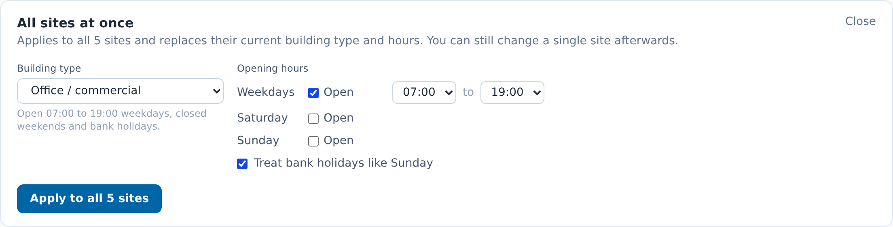
The bulk setting replaces each site's type and hours. It doesn't touch names, rates or capacity.
A fully delivered rate in p/kWh (energy, network, levies and VAT if the client pays it). The default is 25p and applies to every site; set it at the top of the main page. To give one site a different rate, type it on that site; the box goes from grey to black. Back to the portfolio default undoes it.
Enter the agreed supply capacity in kVA (from the bill or supply agreement) to switch on the headroom check (section 9). Power factor converts metered kW to kVA. Use 0.95 if you don't know it; if the bill shows reactive power charges, the real figure is probably lower, and headroom will be smaller than shown.
The main page shows totals for every site loaded, then the Where to start table.
Sites are ranked by out-of-hours use above base load, in £ a year. That's energy used when the building should be closed, over and above what never switches off. It's usually the cheapest saving to get (time controls, BMS schedules), which makes it a good first sort. Ties go to the site with the bigger bill.
Click any heading to sort. Text columns sort A to Z first, number columns largest first; click again to reverse. Data sorts Good, Check, Poor; Findings sorts by the most High findings. Click # to go back to the ranking. Table to Excel saves the table as a one-sheet spreadsheet in the order shown, so sort first. It holds no half-hourly data, so it's fine to send to a client.
| Column | What it shows |
|---|---|
| # | Place in the ranking above. Stays with the site when you sort, so you can see where it came. |
| Site, Type | Site name and building type. has data notes under the name means the app fixed or assumed something when reading the file. |
| Days | Days of HH data in the file. Hover to see the date range. |
| kWh a year, Annual cost | Consumption scaled to a year, and that at the site's rate. |
| Base kW | Load that never switches off (section 13). |
| Out of hours | Share of consumption outside opening hours. Shows 24-7 for sites open around the clock. |
| Above base £/yr | The ranking figure. |
| Headroom kW | Firm headroom, once a capacity is entered. Red means the site is already over its usable capacity. |
| Data | The data quality verdict: Good, Check or Poor. |
| Findings | Count of High, Medium and Low findings. |
Each site page lists what stands out, most important first. A finding is High when it costs 10% or more of the site's annual bill, Medium at 4% or more, and Low below that, so a £2,000 issue matters more at a small site than a big one. Some findings have a fixed level (see the table).
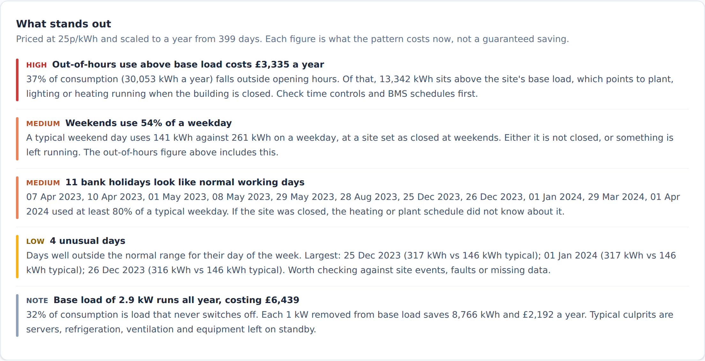
| Finding | When it appears | Level |
|---|---|---|
| Out-of-hours use above base load | Any site with closed hours. Out-of-hours consumption over and above base load, priced. Points to plant, lighting or heating running when the building is closed. | By cost against the bill |
| Base load | Always. The load that never switches off, and what it costs. Each 1 kW removed saves 8,766 kWh a year. | Medium if base load is half or more of consumption at a site that closes; otherwise information only |
| Weekend running | Site set as closed at weekends, but a typical weekend day uses 50% or more of a typical weekday. | High at 70% or more, otherwise Medium |
| Bank holidays like working days | A bank holiday uses at least 80% of a typical weekday at a site that closes on them. | Medium |
| Base load creep | Base load is up 15% or more on the same months a year earlier. Needs about 14 months of data; it compares like months so it doesn't mistake seasons for creep. | By cost of the increase |
| Unusual days | Days far outside the normal range for their day of the week (see section 13). Check against site events, faults or missing data. | Low |
| Supply capacity | Capacity entered. Peak at 90% or more of capacity (little room for electrification), or 50% or less (possibly paying for capacity it doesn't use, or room to electrify). | High at 90%+; information at 50% or less |
They're what each pattern costs now, at the rate entered. They overlap (weekend running is part of the out-of-hours figure), so don't add findings together. For a savings estimate, take the out-of-hours figure and apply your own judgement about how much is controllable.
Every file is checked for the problems that most often distort HH analysis. Each problem says how it affects the numbers. The verdict is:
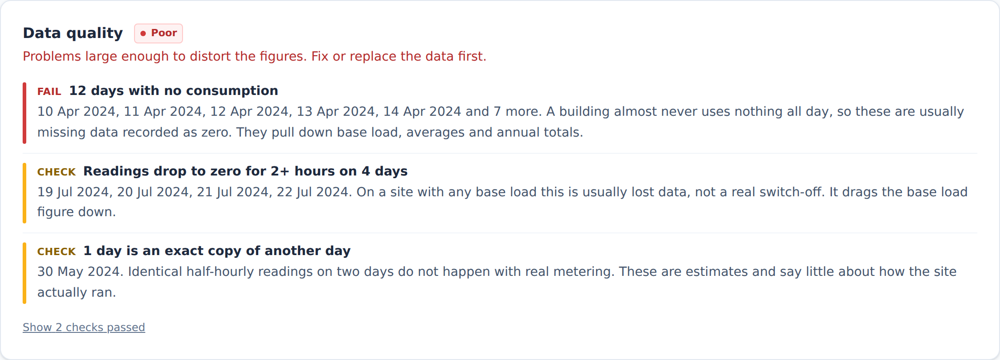
| Check | What it looks for | Check / Fail |
|---|---|---|
| Coverage | Days of data. Annual figures are scaled up from what's there. | Check under 330 days; Fail under 180 |
| Missing days | Days missing between the first and last date. | Fail if over 10% of the period |
| Zero days | Whole days with (almost) no use: usually missing data recorded as zero. | Fail if over 3% of days |
| Dropouts | Readings of exactly zero for 2 hours or more inside an otherwise normal day. | Fail if over 5% of days |
| Negative readings | Export from on-site generation, a reversed CT, or a sign error. | Always Fail |
| Stuck readings | The same non-zero value for 6 hours or more: usually estimated or profiled data. | Fail if over 10% of days |
| Copied days | A day identical to an earlier one. Real metering never repeats exactly; these are estimates. | Fail if over 5% of days |
| Spikes | Readings over 3 times the normal peak (99.5th percentile) and at least 5 kW above it. | Check only |
Stuck readings can be normal on a small site whose meter records whole kWh only. Ignore that check if so.
Zero days and dropouts pull base load and annual totals down. Estimated data hides how the site really ran. A single spike sets the peak demand figure and the headroom answer. Check the verdict before quoting peak, capacity or savings.
Enter the agreed supply capacity (kVA) on a site to see how much load (heat pumps, EV charging, new plant) it can add before it outgrows the supply.
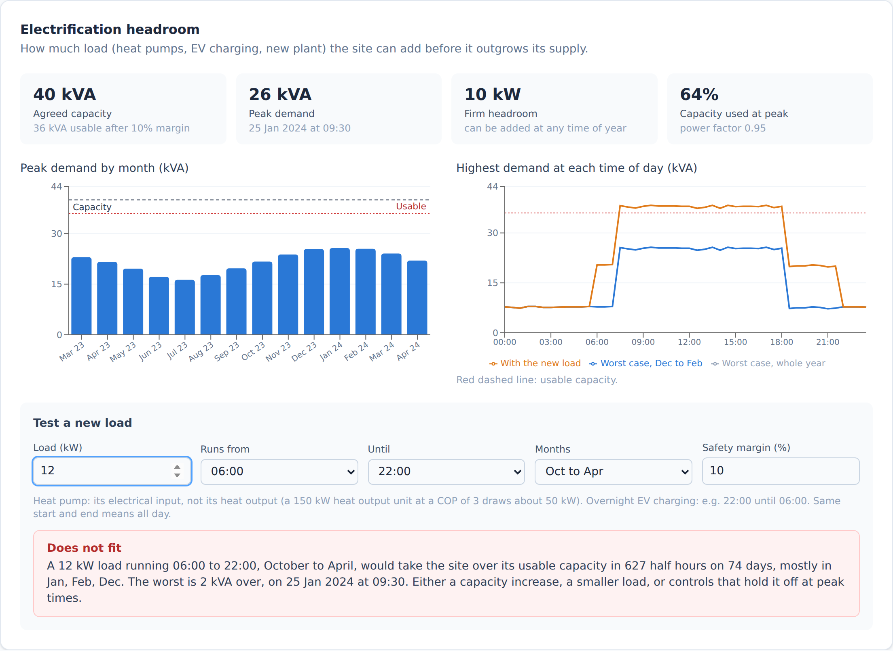
Enter a load in kW, the hours it runs and whether it runs all year or October to April. The app adds it to every half hour it would run in and reports whether it fits, how often and by how much it wouldn't, and when the worst clash is.
This uses one year's peak from one meter. It doesn't know about a colder year, load on other meters on the same supply, or DNO constraints upstream. It's a screen to decide whether a capacity conversation is needed, not a substitute for one.
Each site page has these charts, and all of them go into Download all charts (PDF). The analyser charts lower down share a date range filter and an option to leave out bank holidays; the PDF uses whatever filters are set.
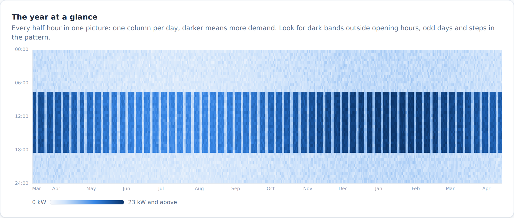
The fastest way to read a site. Look for dark bands outside opening hours, weekends that look like weekdays, holidays that don't show up, a step change in the pattern, and gaps.
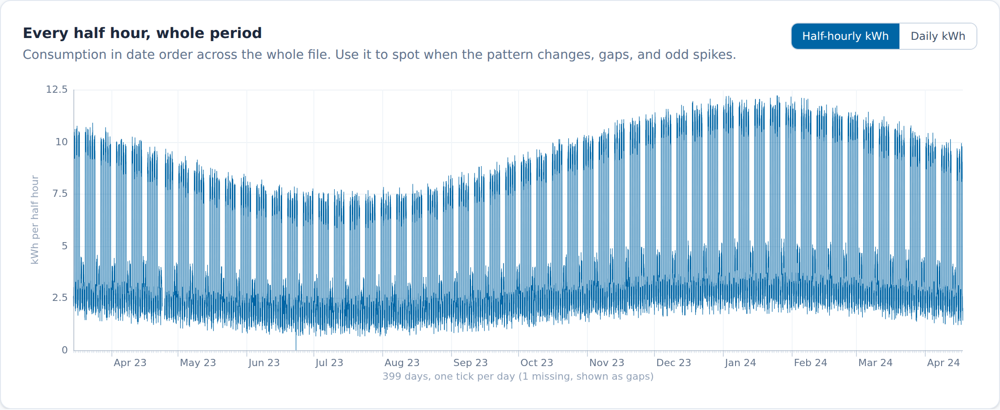
| Chart | Use it to |
|---|---|
| Average demand by day of week | Compare the shape of a typical Monday, Saturday, Sunday and so on, half hour by half hour. Toggle series on and off. Shows start-up and shut-down times and weekend running. |
| Load duration curve | See demand sorted from highest to lowest, as hours per year at or above each level. A short spike on the left is an expensive peak; the flat right-hand end is base load. Shows peak, average, base (lowest reading) and load factor. |
| Day and night by month | Split each month's use between day and night (night is 00:00 to 07:00 by default; adjustable). High night use at a site that closes is a quick out-of-hours check. |
| Week profile and week comparison | Look at one week in detail, or two weeks side by side (before and after a change, summer against winter). |
| Every half-hourly reading | A scatter of every reading against time of day. A tight band is a predictable site; a wide spread means the average hides a lot. |
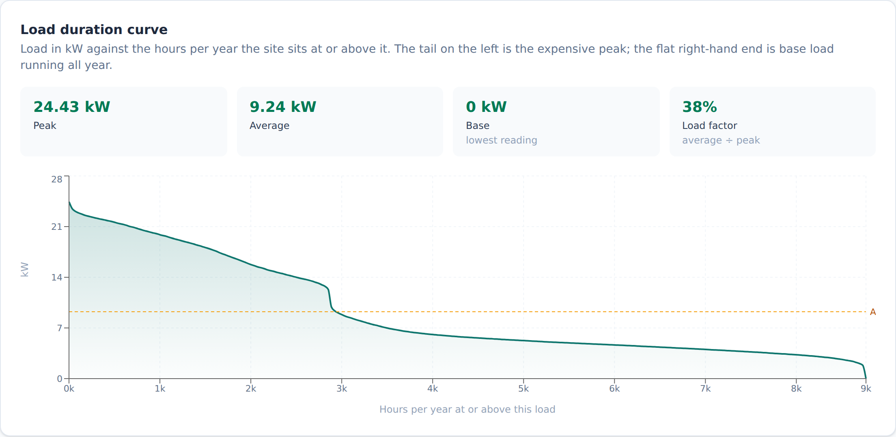
Every PDF carries the Ameresco logo and, if you've added one, the client's logo on every page. Set the client name and logo on the main page before exporting.
| Output | What's in it | Audience |
|---|---|---|
| Site summary (PDF) | One page per site: costs, findings, data quality and the year at a glance. | Client-ready |
| Download all charts (PDF) | Full site report: findings, headroom, heatmap, every chart and table. | Client-ready |
| Charts as separate PDFs (zip) | The same report as one PDF per chart, numbered in report order. Handy for dropping into proposals. | Client-ready |
| Portfolio report (PDF) | Ranked table of all sites, then one page per site. | Client-ready |
| Table to Excel | The Where to start table, in the order shown. | Internal or client |
| Export to Excel | Summary, findings, data quality, monthly figures, headroom, average profiles and the raw half-hourly data for every site. | Internal (contains the raw data) |
| Customer edition | A locked, password-protected dashboard file for one client (section 12). | Client |
PNG, JPG or SVG. A wide logo on a white or transparent background works best. It stays until you remove it or clear all data, and it goes into any customer edition you make.
The PDFs and charts follow the date range and bank holiday filter set on the site page. To report a specific year, set the range first.
A customer edition is a single HTML file holding one client's sites, locked with a password. The client opens it in their browser, explores their own data and downloads their own reports, without getting the raw data or being able to change the set-up.
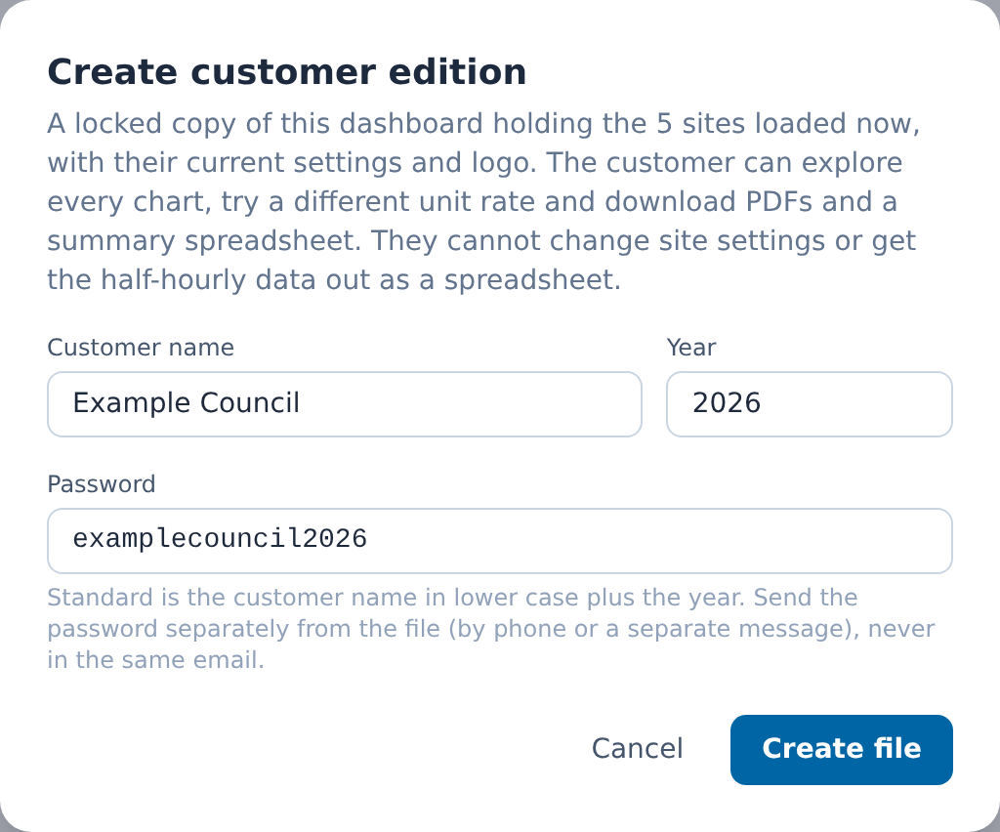
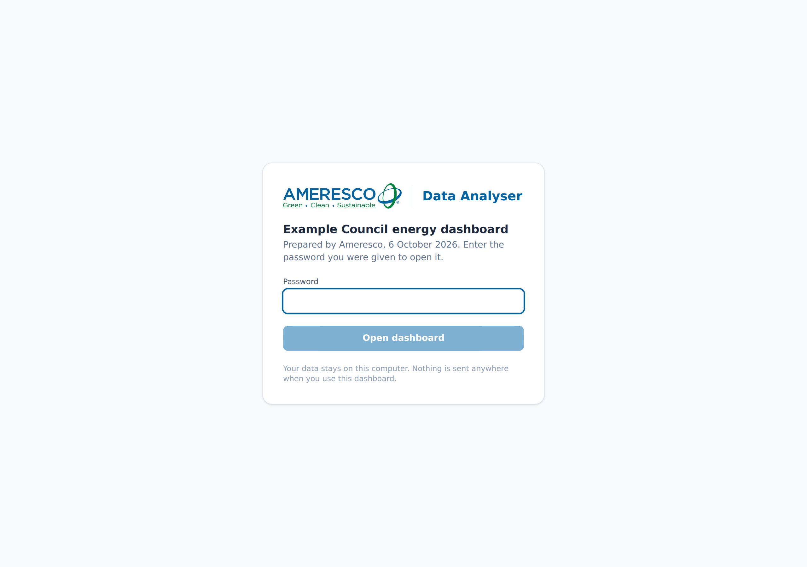
client-name-energy-dashboard.html.The standard password is the customer name in lower case, letters and digits only, followed by the year it was made. For example, Compleat Foods in 2026 is compleatfoods2026. You can type a different one in the dialog.
Anyone who knows the convention, or has seen this guide, can work out a client's password. That's fine for low-sensitivity data. For anything sensitive, or larger public sector estates, add a random part (e.g. compleatfoods2026-tulip84) and keep a note of it. Never send the password in the same email as the file.
| They can | They can't |
|---|---|
| Explore every chart and table, change dates and filters, sort and export the sites table | Add or remove sites |
| Try a different unit rate and see the costs change | Change building types, hours, capacity or headroom settings |
| Download the site summary, full report, separate chart PDFs, portfolio report and a summary spreadsheet | Export the half-hourly readings to a spreadsheet |
| Lock the dashboard again | Change or remove the logos |
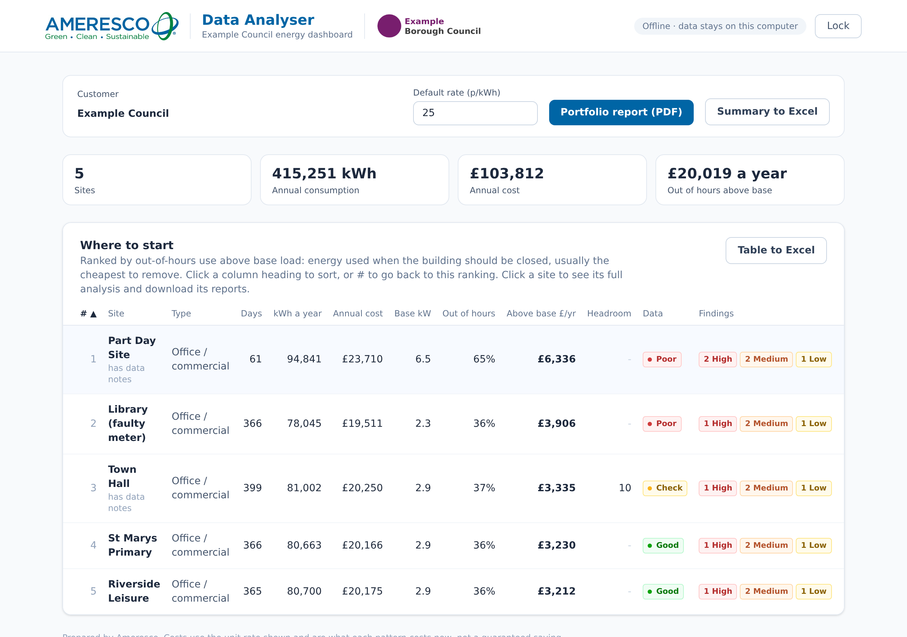
| Figure | How it's worked out |
|---|---|
| Demand (kW) | Half-hourly kWh × 2. |
| Annual kWh and cost | Total kWh in the file × 365.25 ÷ days of data. Cost = annual kWh × unit rate. Missing periods are assumed to look like the ones present. |
| Base load (kW) | The 5th percentile of all half-hourly demand, not the minimum, so a single dropout or zero reading doesn't set it. Blank readings are left out. |
| Base load cost | Base kW × 8,766 hours × rate. |
| Out-of-hours use | All kWh in half hours outside opening hours, scaled to a year. |
| Out-of-hours above base | For each out-of-hours half hour, demand above base load (never below zero), scaled to a year and priced. This is the ranking figure. |
| Peak and load factor | Peak is the highest half hour (× 2 for kW). Load factor = average kW ÷ peak kW. |
| Finding level | £ a year ÷ annual bill: 10% or more High, 4% or more Medium, below that Low. |
| Weekend running | Median weekend day ÷ median weekday. Reported at 50%, High at 70%. |
| Bank holidays | Holidays using 80% or more of the median weekday, at sites that close on them. |
| Base load creep | 5th percentile base for each month with 20+ days of data. Months paired with the same month a year later; reported if the average rises 15% or more over at least two pairs. Cost = increase × 8,766 × rate. |
| Unusual days | Each day's kWh against the median for its kind (weekday, Saturday, Sunday; bank holidays counted as Sundays). Flagged if more than 4 robust standard deviations (1.4826 × median absolute deviation) away and at least 25% off the median. |
| Peak kVA | Peak kW ÷ power factor (0.95 default). |
| Usable capacity | Agreed kVA × (1 − safety margin). Margin 10% by default. |
| Firm headroom | (Usable kVA − peak kVA) × power factor, in kW. |
| Test load | Load kW ÷ power factor added to each half hour in its time window and season (all year, or October to April). Any half hour over usable kVA counts as a clash. |
| Day and night | Night 00:00 to 07:00 by default, adjustable on the chart. |
The app's maths is tested against the Python version of the same analysis on reference files, so both give the same answers.
| Problem | What to do |
|---|---|
| File refused: several meters stacked | The file holds more than one meter. Split it into one file per MPAN. |
| Expected 48 half-hour columns | The file isn't half-hourly (it may be hourly or daily), or the readings are in an unusual layout. Re-export it as one row per day with 48 readings. |
| Could not read file | Open it in Excel and save it as .xlsx or .csv. Password-protected workbooks can't be read. |
| "No usable date column", data assumed to start 1 January | Add a date column, one date per row. Without dates, weekdays, weekends and bank holidays are guessed. |
| Out-of-hours figure looks far too high | Check the building type and hours. A 24-hour site set as an office will show most of its use as out of hours. |
| Base load or peak looks wrong | Read the data quality panel. Zero days, dropouts and spikes move both. |
| No base load creep finding | It needs about 14 months of data, so like months can be compared. |
| Customer edition won't open | Check the password (lower case, no spaces). The file must be opened in Chrome or Edge; previewing it in Outlook or Teams won't work. Save it, then double-click. |
| Logo not on the PDF | Add the client logo on the main page before exporting. It applies to every PDF made after that. |
| Page slow to respond | Close other heavy tabs. With very large estates, load fewer sites at a time. |
Send them to the app owner with the file that caused the problem (or a description if it's client-confidential), what you expected, and what you saw. Screenshots of the data notes help.